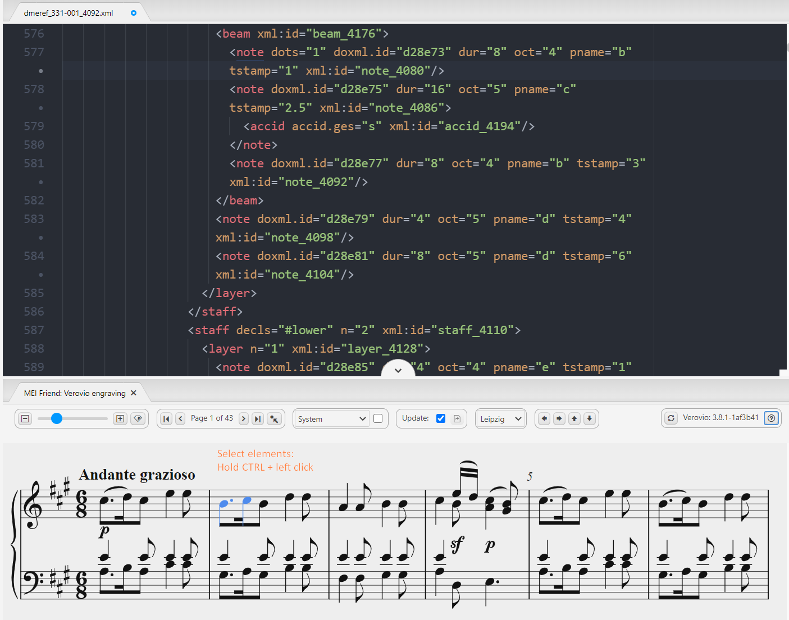
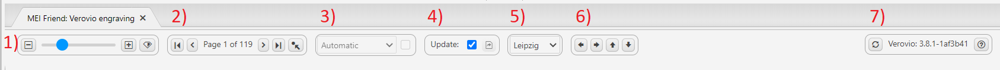
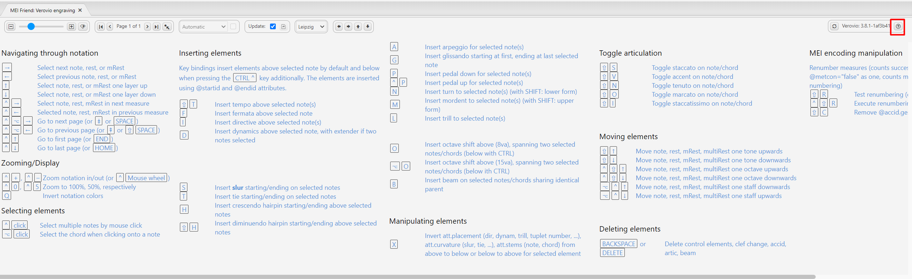

Mei‑friend. A viewer and last-mile editor for MEI score encodings
Table of Contents
Abstract
Mei‑friend, a free and open-source package for the Atom text editor, enables convenient and fast rendering of music encoded in the format of the Music Encoding Initiative (MEI) including some important navigation and display options. Furthermore, it provides various functionalities for graphical editing of MEI code using rendered music notation. Mei‑friend is primarily aimed at musicologists, librarians, musicians and music enthusiasts. Users are required to have a moderate technical expertise only owing to straightforward installation and intuitive usage of the tool.
Introduction
Digital music editions can be created using the format of the Music Encoding Initiative (MEI), which “share[s] many common characteristics and development practices”1 with TEI, especially those for digital editions2. For MEI, rendering of XML code as symbolic music notation is essential during the edition process. Typically, projects using MEI3 create their own (web) applications where MEI is rendered. Those are mainly designed as presentation platforms and might not be very suitable as production tools, although some project-specific functionalities can be tested in these environments. The tool mei‑friend is designed for usage during the process of creating an edition, more precisely for preparing basic musical text only as no editorial-specific markup is currently possible. Music notation other than Common Western Notation might be displayed if supported by the rendering engine4. However, no editing functionalities for working with them are available.
Mei‑friend is distributed as a free package5 for the Atom text editor6. It has been developed by Werner Goebl and David Weigl in order to meet the needs of the project TROMPA7 and was generously shared with the MEI community8. The author was able to integrate the tool into his daily routine of MEI encoding very well, turning it into a more convenient and efficient process9.
For this review, the following hardware/software was used: Microsoft Windows 10 Pro N, Version 21H2 (64 bit), Atom v1.58.0 x64, mei‑friend v0.6.0, running on Dell Latitude 7480 (CPU Intel Core i5-6300U, RAM 8 GB). Additionally, the installation process and basic functionalities were checked on Ubuntu 21.04 with the same Atom and package versions, running on HP ProBook 440 G4 (CPU Intel Core i5-7200U, RAM 8 GB).
Methodology
Since MEI was introduced, a number of tools10 have been developed which try to address the problem of MEI rendering in the first place as currently no notation software like Sibelius, Finale or MuseScore supports MEI natively. A few of the earliest initiatives include Verovio MEI viewer11 and MEISE12 (web-based), which can display and navigate MEI. An oXygen add-on13 enables rendering of MEI right in the editor, but it currently seems to work for macOS only. Further on, the Verovio-Humdrum-Viewer14 (VHV) and Verovio Editor15 (web-based) offer functionalities for graphical editing of MEI. The former offers a relatively large amount of editing operations; however, internally VHV works with the format kern. This leads to some conversion inconsistencies when importing/exporting MEI files. The Verovio Editor processes MEI natively but only a few editing operations are currently implemented. In addition, some of the tools mentioned above offer other functionalities such as creating PDF and MIDI files, advanced rendering options, etc. The predecessor of mei‑friend is a (legacy) Atom package – mei‑tools‑atom16. Although, this package offers hardly any functionalities beyond a basic display, it certainly provides a good base for further development.
None of the tools mentioned above (including mei‑friend) cannot be considered as a full-fledged editor. Therefore, a typical data acquisition method in the MEI community includes conversion from data formats originally gained by manual typesetting with a notation software mentioned above or using Optical Music Recognition. Usually, manual post-processing is needed, and this is the gap that mei‑friend aims to fill.
One of the advantages that mei‑friend offers is the user friendly rendering. In my other workflow, I use a local editor for code editing and a web-based application for rendering. This setup requires several steps to display the results. This is time and energy consuming when performed repetitively and might cause errors; for instance, because of file cashing in the browser. Mei‑friend updates the rendered notation immediately after the code has been changed. This may happen as one types in Atom (default) or after saving the file in an external editor. An additional advantage is that the page remains the same after re-rendering (in some other web applications I used, the displayed page flips to the first page of the score).
<dynam>, <slur>,
<arpeggio>) as these elements establish references to Events
(<note>,<chord>) by pointing to their
@xml:ids. Collecting these @xml:ids manually can be a
tedious and error-prone task, especially if you work with a large score like a
symphony. The approach used by mei‑friend is intuitive and fast: Select the Events by
clicking them in the notation window (cf. figure
1) and press a shortcut that triggers a code editing function. For instance,
the shortcut ‘s’ inserts the following MEI element into its correct position in the
XML hierarchy:
Currently, mei‑friend enables inserting a subset of ControlEvents and the
layer-level-element <beam>; respectively, deletion works for these
elements only. The elements are inserted with a pre-defined (minimal) set of
attributes and dynamically created @xml:ids. Placement attributes can be
manipulated, but other attributes have to be entered manually.
Finally, mei‑friend provides a few utilities for code refactoring
operations as renumbering of measures, correction of accidentals and the utility
called “regenerate encoding through Verovio”. The latter adds @xml:ids
where missing but should be applied with special care as some undesired code changes
may occur (cf. the issue on GitHub).
Implementation
“[M]ei‑friend is written in JavaScript using the Atom package framework” (Goebl, Weigl 2021, 6). It has very little dependencies which are managed using the node package manager: jQuery and Verovio. In addition, the Atom package language‑mei is required. Using Verovio’s JavaScript toolkit, MEI is rendered to SVG and embedded into a “repositionable pane within the Atom application window” (Goebl, Weigl 2021, 6) as it would be in a browser. Likewise, some other functionalities such as page breaks, zoom etc. are based on the respective Verovio functions.
The tool accepts files with ‘xml’ and ‘mei’ extensions and UTF-8 encoding. No validation is performed natively, but dedicated XML packages may be used. Some encoding‑related warnings and errors raised by Verovio and actions on the GUI are tracked in the console of the developer tools18. For erroneous data, depending on the error, rendered notation is displayed up to the point where the error occurs or is not displayed at all.
The performance on small19 and middle-sized20 files is high using the default settings. However, “[l]arge21 MEI encodings (of about 25,000 lines and more) cause performance issues[…]”22 including disabled XML‑syntax highlighting. Two possibilities to handle this are provided: 1) Manual updates of the rendered notation and 2) usage of the speed mode. The last is an innovation which significantly improves performance on large files23. Currently, a few limitations24 and downsides25 have to be expected.
Usability, sustainability and maintainability
The package can be installed using GUI or from CLI26. The dependencies are handled by the installation process itself; a prompt appears for installation of the Atom package language‑mei. The installation procedure is well described in the Atom package registry27, which I consider to be a main documentation page.
The documentation provides an overview of the tool and its functionalities; an animated screenshot28 illustrates the concepts described. Example MEI files are provided as direct download and as a link to a GitHub repository with musical works published by TROMPA. Additionally, a few MEI files can be found locally in the installation folder of the package.
No special tool support is provided, but issues can be posted on GitHub and are reviewed in a reasonable time. In addition, the developers are active members of the MEI community and can be reached through its common communication channels29.
The learning curve based on my experience and those of our project’s chief lecturer is rather moderate. No specialized programming skills are required. However, it is advantageous to have basic knowledge of how to work with text editors, in particular with Atom, and, of course with MEI itself. It may take some time to familiarize yourself with the keybindings and to memorize them.
Mei‑friend can be used on all platforms30 where Atom can be installed. However, a small bias towards macOS is present: The icons for the keybindings are macOS‑style also on Windows and Ubuntu, and not every keybinding works on these platforms31.
As mei‑friend is an Atom package, the user benefits from other Atom functionalities and features such as a built-in search utility, Git and GitHub integration, other related packages, etc. In addition, Atom interoperates well with other editors. For instance, it is possible to edit the same MEI in oXygen XML editor and view the changes in the rendering pane of mei‑friend immediately after the file has been saved.
Package development takes place on a public GitHub repository32. A README file contains documentation (same content as on the Atom package page) as well as acknowledgments to the project contributors and predecessors; the (MIT) license is linked here. No CITATION.cff33 file or citation guidelines are provided.
The developers of mei‑friend informed me that the tool is currently being redeveloped and extended as a web-browser application in the context of the project Signature Sound Vienna (development takes place on another GitHub repository which is currently private). Several general improvements are planned: automatic page flipping, a wider range of rendering options (based on Verovio), GitHub integration, etc. In addition, functionalities that are specific for digital editions (such as editorial markup) might be added.
Most likely the development of a web-based version of mei‑friend will be
priority and the Atom package will not be actively maintained. For users who still
prefer to use the Atom package (due to the interoperability with other local editors,
for example), it is important to keep the MEI rendering engine Verovio up to date.
Currently, this can be done in several ways: 1) by running updates pushed by the
developers, 2) by reinstalling the package 3) or by running an npm
update command from the package installation folder.
User interaction and GUI
MEI code is displayed alongside a pane with rendered music notation (cf. figure 1). The music notation itself is part of the GUI as the SVG elements are clickable here. Moreover, most of them are mapped to the MEI elements in the text pane. For instance, clicking a note in the notation pane immediately shows the respective MEI element in the editor pane. This also works vice versa; however, if the focused MEI element is out of range of the currently rendered page, the page has to be flipped manually.


Conclusion and outlook
Mei‑friend can be very useful for “polishing” MEI encodings after conversion from other formats but is currently not aimed to be a full-fledged MEI editor. Display of MEI files is implemented in a user-friendly and efficient way. Speed mode – another innovation by the developers of mei‑friend – significantly improves the performance of the tool. Various code editing functionalities are implemented, mainly utilizing manipulation of ControlEvents and a few attributes. The tool is currently being redeveloped and extended as a web-browser application in the context of the project Signature Sound Vienna.
Bibliography
- Goebl, W.; and M. Weigl, D. Alleviating the Last Mile of Encoding: The mei-friend Package for the Atom Text Editor. In Münnich, S.; and Rizo, D., editor(s), Music Encoding Conference Proceedings 2021, pages 31–39, 2022. Humanities Commons, https://music-encoding.org/conference/proceedings.html.
- Music Encoding Initiative. 2019. MEI Guidelines (Version 4.0.1). https://music-encoding.org/guidelines/v4/content.
- mei-friend package for Atom: https://atom.io/packages/mei-friend.
- Music Encoding Initiative. 2022. https://web.archive.org/web/20220121074651/https://music-encoding.org/about.
- Pugin, Laurent, Rodolfo Zitellini, and Perry Roland. 2014. “Verovio: A Library for Engraving MEI Music Notation into SVG.”. In Proceedings of the 15th International Society for Music Information Retrieval Conference, 107– 12. Taipei, Taiwan: ISMIR. https://doi.org/10.5281/zenodo.1417589.
- Sapp, Craig. 2017. “Verovio Humdrum Viewer”. Presented at Music Encoding Conference 2017 (MEC 2017), Tours, France. Slides available from http://bit.ly/mec2017-vhv. Tool available from http://Verovio.humdrum.org.
- Trompamusic, https://web.archive.org/web/20220107224134/https:/iwk.mdw.ac.at/h2020-trompa.
Notes
- https://web.archive.org/web/20220121074651/https://music-encoding.org/about. ↑
-
For instance, the
usage of the
<app>element for alternatives (cp. https://tei-c.org/release/doc/tei-p5-doc/en/html/ref-app.html and https://music-encoding.org/guidelines/v4/elements/app.html) or of the<supplied>element for material “supplied by the transcriber or editor for any reason” (cp. https://tei-c.org/release/doc/tei-p5-doc/en/html/ref-supplied.html and https://music-encoding.org/guidelines/v4/elements/supplied.html). Also, there are many similar concepts in the encoding of metadata (cp. <teiHeader> and <meiHead>). ↑ - For instance, Freischuetz Digital, Marenzio Online Digital Edition, Digital Interactive Mozart Edition, Beethovens Werkstatt. ↑
- The Verovio engraving library (cf. Pugin, Zitellini, and Roland, 2014). ↑
- https://web.archive.org/web/20220209081823/https://atom.io/packages/mei-friend, currently 427 downloads [01-19-2022]. ↑
- https://atom.io. ↑
- https://web.archive.org/web/20220210094706/https://iwk.mdw.ac.at/h2020-trompa. ↑
- The presentation at the Music Encoding Conference 2021 received the best paper award. ↑
- The author has been working as research assistant at the Digital Interactive Mozart Edition (Mozarteum Foundation Salzburg) since 2018 having both editorial and technical responsibilities. He has been using mei‑friend since 2021 and its predecessor mei-tools-atom since 2020. ↑
- Only the tools for working with Common Western Notation are considered here. ↑
- https://www.verovio.org/mei-viewer.xhtml. ↑
- https://meise.de.dariah.eu. ↑
- https://github.com/music-encoding/oXygen-MEI-addon. ↑
- Sapp, 2017. https://verovio.humdrum.org. ↑
- https://editor.verovio.org. ↑
- https://web.archive.org/web/20220214130403/https://atom.io/packages/mei-tools-atom. ↑
- Music Encoding Initiative. 2019. 1.2.2. Events and ControlEvents In MEI Guidelines (Version 4.0.1). https://music-encoding.org/guidelines/v4/content/introduction.html#eventsControlevents. ↑
- View > Developer > Toggle Developer Tools. ↑
- Cf. https://dme.mozarteum.at/movi/file/561/001. ↑
- Cf. https://dme.mozarteum.at/movi/file/332/002. ↑
- Cf. https://dme.mozarteum.at/movi/file/550/001. ↑
- Goebl, Weigl 2021, 8. See also the detailed explanation there. ↑
- For a detailed description of the implementation, see Goebl, Weigl 2021, 8-10. ↑
-
“Works currently only with the
breaksoption set toSystem(line)andPage and System(encoded).” Cf. the documentation page. ↑ - For instance, the “flip-page” button shifts the score to the next page after the searched one. ↑
- https://web.archive.org/web/20221215131355/https://flight-manual.atom.io/using-atom/sections/atom-packages/. ↑
- https://web.archive.org/web/20220209081823/https://atom.io/packages/mei-friend. ↑
- Currently visible on GitHub only. ↑
- https://music-encoding.org/community/community-contacts.html. ↑
- Mac, Windows, Linux. Cf. https://web.archive.org/web/20221026021350/https://flight-manual.atom.io/getting-started/sections/installing-atom/. ↑
- For instance, the keybinding for “Show/Hide Notation” (ctrl-shift-m). As a workaround in Atom, it is possible to create custom keybindigs, cf. https://web.archive.org/web/20221122152245/https://flight-manual.atom.io/using-atom/sections/basic-customization/. ↑
- https://github.com/trompamusic/mei-friend. ↑
- https://citation-file-format.github.io. ↑
-
File > Settings > Packages
>
<mei-friend>. ↑ - https://web.archive.org/web/20220209101922/https://atom.io/packages/command-palette. ↑
- Packages > MEI friend. ↑
@article{mei-friend,
author = {Sapov, Oleksii},
title = {Mei‑friend. A viewer and last-mile editor for MEI score encodings},
journal = {RIDE – A review journal for digital editions and resources},
number = {15},
year = {2022},
doi = {10.18716/ride.a.15.2},
url = {https://doi.org/10.18716/ride.a.15.2},
}TY - JOUR
AU - Sapov, Oleksii
TI - Mei‑friend. A viewer and last-mile editor for MEI score encodings
T2 - RIDE – A review journal for digital editions and resources
IS - 15
PY - 2022
DA - 2022/12
DO - 10.18716/ride.a.15.2
UR - https://doi.org/10.18716/ride.a.15.2
PB - Institut für Dokumentologie und Editorik e.V.
LA - en
ER - Sapov, O. (2022). Mei‑friend. A viewer and last-mile editor for MEI score encodings. RIDE – A review journal for digital editions and resources, (15). https://doi.org/10.18716/ride.a.15.2Sapov, Oleksii. "Mei‑friend. A viewer and last-mile editor for MEI score encodings." RIDE – A review journal for digital editions and resources, no. 15, 2022. https://doi.org/10.18716/ride.a.15.2.Sapov, Oleksii. "Mei‑friend. A viewer and last-mile editor for MEI score encodings." RIDE – A review journal for digital editions and resources, no. 15 (2022). https://doi.org/10.18716/ride.a.15.2.